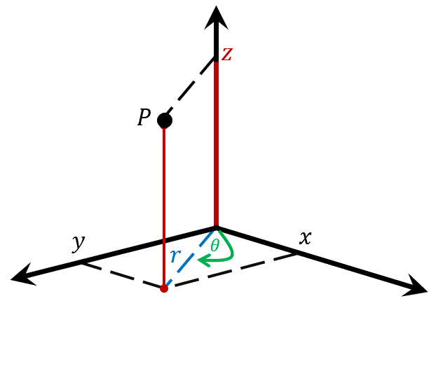
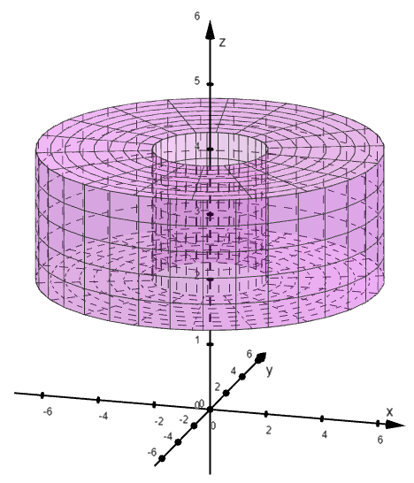
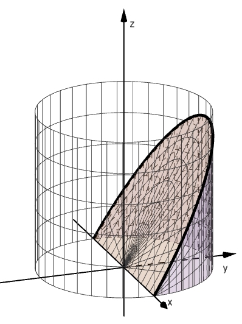
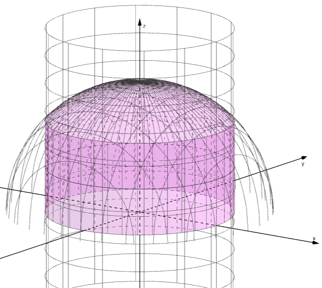

Cylindrical Coordinates and Triple Integrals
Again we see how changing to a different coordinate system can simplify a problem. This time we use cylindrical coordinates.
Every point in space can be located using three pieces of information, which is why space is three-dimensional. In rectangular coordinates, these are \(x\), \(y\), and \(z\), and a point is written \(P = (x, y, z)\). In cylindrical coordinates, we describe the same point using these three quantities:
- \(r\), the distance from the origin to the point’s projection onto the \(xy\)-plane,
- \(\theta\), the angle between the positive \(x\)-axis and the line from the origin to that projection, and
- \(z\), the height above or below the \(xy\)-plane.
So the point is written \(P = (r, \theta, z)\). Notice the similarity to polar coordinates.

Converting Between Coordinates
An Example
Find the cylindrical coordinates \((r, \theta, z)\) of the point with rectangular coordinates \((-1, 1, 3)\).
As with polar coordinates, \(r = \sqrt{(-1)^2 + 1^2} = \sqrt{2}\) and \(\theta = \frac{3\pi}{4}\), since the projection \((-1, 1)\) is in the second quadrant. The height \(z = 3\) stays the same.
The cylindrical coordinates are \(\left(\sqrt{2},\ \frac{3\pi}{4},\ 3\right)\).
Volume Differential
A small cylindrical box has a base in the \(xy\)-plane with area \(dA = r\,dr\,d\theta\), from polar coordinates, and a height \(dz\). Its volume is the base area times the height.
An Example
Let \(E\) be the solid enclosed by the planes \(z = 2\) and \(z = 4\) and the cylinders \(x^2 + y^2 = 4\) and \(x^2 + y^2 = 36\). Use cylindrical coordinates to evaluate the triple integral below. Then confirm your result using basic geometry.

The solid is \(2 \le r \le 6\), \(0 \le \theta \le 2\pi\), and \(2 \le z \le 4\).
Geometry check: the solid is a ring with area \(\pi \cdot 6^2 - \pi \cdot 2^2 = 32\pi\) and height \(2\), so its volume is \(64\pi\).
An Example
Let \(E\) be the solid enclosed by the planes \(z = -1\) and \(z = 8\) and the cylinders \(x^2 + y^2 = 1\) and \(x^2 + y^2 = 9\). Use cylindrical coordinates to evaluate the triple integral below.
The solid is \(1 \le r \le 3\), \(0 \le \theta \le 2\pi\), and \(-1 \le z \le 8\).
An Example
Let \(E\) be the solid bounded below by the plane \(z = 0\), above by the plane \(z = y\), and on the sides by the cylinder \(x^2 + y^2 = 4\). Use the triple integral below to find the volume of this solid.
Hints: Use cylindrical coordinates and the formula \(y = r\sin\theta\). Because the solid is above \(z = 0\), we need \(y \ge 0\), so \(0 \le \theta \le \pi\).

An Example
Let \(E\) be the region that lies above the \(xy\)-plane, inside the sphere \(x^2 + y^2 + z^2 = 25\), and inside the cylinder \(x^2 + y^2 = 16\). Use cylindrical coordinates and the triple integral below to find the volume of this solid.

The top of the solid is the sphere, \(z = \sqrt{25 - r^2}\). The cylinder gives \(0 \le r \le 4\).